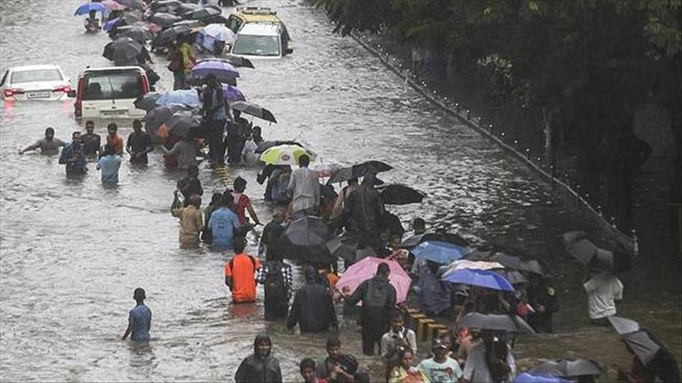
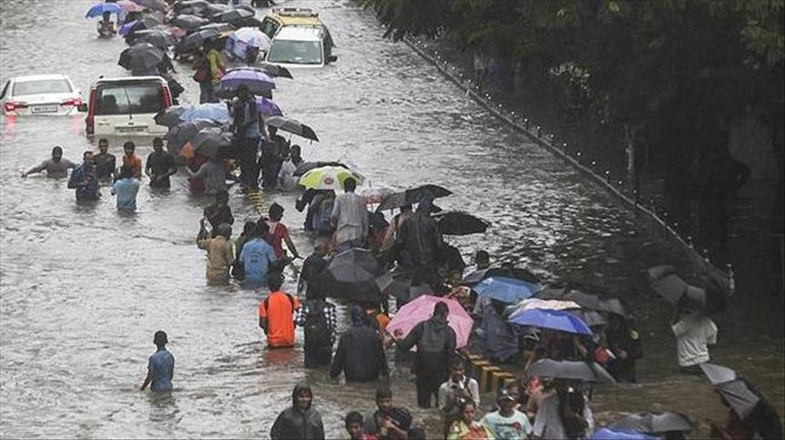

Preguntas frecuentes:
¿Cómo puedo identificar una emergencia médica real y
cuándo debo llamar a los servicios sanitarios?
Una emergencia médica es toda situación en la que la vida,
la salud o la integridad de una persona está en peligro y
requiere atención inmediata. No siempre es fácil distinguir
una urgencia de una emergencia, por eso es importante observar
los signos críticos:
- Pérdida de conocimiento o estado mental alterado
- Dolor torácico intenso y persistente (posible infarto)
- Dificultad respiratoria grave o falta de aire
- Hemorragias abundantes que no se detienen
- Convulsiones o ataques epilépticos prolongados
- Quemaduras extensas o en zonas sensibles (rostro, genitales, vías respiratorias)
- Sospecha de ictus: dificultad para hablar, sonreír, levantar brazos, desorientación
- Intoxicación por sustancias o gases
- Accidentes con posibles fracturas graves o aplastamientos
Ante cualquiera de estas señales, llama al 112 de inmediato,
proporciona toda la información posible y no muevas al paciente
salvo que su vida corra más riesgo si permanece en el lugar
¿Qué debo hacer como testigo de un accidente grave o situación de riesgo?
Si eres testigo de una situación potencialmente peligrosa
(como un accidente de tráfico, incendio o colapso), sigue estos pasos:
- Mantén la calma. Tu reacción puede influir en los demás
- Asegura tu seguridad primero. No entres a zonas inestables o con riesgo eléctrico, fuego,
etc.
- Llama al 112. Es fundamental avisar a los servicios de emergencia lo antes posible.
- Describe claramente la situación: lugar exacto, número de personas involucradas,
tipo de accidente, si hay fuego, humo, personas atrapadas, etc.
- Actúa si tienes conocimientos. Aplica primeros auxilios básicos solo si sabes hacerlo
y no pones en riesgo tu vida.
- No muevas a heridos, salvo que estén en peligro inmediato (fuego, derrumbe, etc.).
- Sigue las instrucciones del operador del 112. Están entrenados
para guiarte incluso si no tienes experiencia.
¿Qué información debo dar cuando llamo al 112 u otro número de emergencias?
Una llamada clara y bien estructurada puede salvar vidas. Cuando llames al 112,
intenta mantener la calma y proporciona la siguiente información, en este orden:
- Lugar exacto: calle, número, referencias cercanas, piso, zona rural, etc.
- Qué ocurre: accidente, incendio, persona inconsciente, violencia, etc.
- Número de personas afectadas y su estado aproximado (consciente, herido, atrapado).
- Peligros presentes: fuego, gas, tráfico, cables, armas.
- Quién llama y desde qué número.
No cuelgues hasta que el operador te lo indique. Si cometes errores, no pasa nada,
el operador te hará preguntas hasta entender bien la situación.
¿Qué puedo hacer antes de que lleguen los servicios de emergencia?
Mientras los servicios de emergencia se desplazan al lugar, puedes realizar acciones
clave que marcan la diferencia:
- Asegura el entorno: corta la electricidad si hay riesgo, aleja materiales inflamables,
controla a animales o personas que puedan agravar la situación
- Atiende a las víctimas si sabes primeros auxilios: detener hemorragias, mantener la vía aérea abierta,
colocar en posición lateral de seguridad, etc.
- Cubre a los heridos para mantener su temperatura corporal.
- No administres medicamentos ni alimentos a los afectados.
- Espera en un lugar visible si eres quien guiará a los equipos de emergencia.
- Controla a otras personas para evitar el pánico o acciones impulsivas.
¿Qué debo tener preparado en mi casa o coche en caso de una emergencia general?
Contar con un kit básico de emergencia te permite actuar rápidamente ante situaciones como apagones,
inundaciones, terremotos o cualquier tipo de crisis. Este kit debe contener:
Para el Hogar
- Linterna con pilas o recargable
- Botiquín de primeros auxilios completo
- Agua potable (mínimo 2 litros por persona por día)
- Alimentos no perecederos
- Radio a pilas o con dinamo
- Copias de documentos importantes
- Lista de teléfonos de emergencia
- Cargador portátil para móviles
- Mascarillas, guantes, gel desinfectante
- Mantas, ropa de abrigo
Para el coche
- Linterna con pilas o recargable
- Botiquín de primeros auxilios completo
- Agua potable (mínimo 2 litros por persona por día)
- Alimentos no perecederos
- Cargador portátil para móviles
- chaleco reflectante
- Lista de teléfonos de emergencia
- Mantas, ropa de abrigo
- Mapa en papel (si hay cortes de red)
¿Qué errores comunes se cometen en una emergencia y cómo evitarlos?
En situaciones de emergencia, es fácil caer en errores que pueden agravar la situación.
Aquí algunos de los más comunes:
- Entrar en pánico: Mantén la calma y respira hondo. La claridad mental es clave.
- Ignorar las instrucciones del 112: Escucha atentamente y sigue las indicaciones del operador.
- Intentar mover a heridos sin necesidad: No lo hagas a menos que haya un peligro inmediato.
- Usar el teléfono para grabar en lugar de ayudar: Prioriza la seguridad de los afectados.
- Desinformar o propagar rumores: Verifica la información antes de compartirla.
- No tener un plan de emergencia familiar: Prepara un plan y un kit básico para tu hogar y coche.
- Olvidar revisar el botiquín de primeros auxilios: Asegúrate de que esté completo y actualizado.
- Desestimar la importancia de la formación: Considera cursos de primeros auxilios y RCP.
- Desconocer los números de emergencia: Ten siempre a mano el 112 y otros números locales.
- Ignorar la seguridad personal: Asegúrate de que el entorno sea seguro antes de actuar.
- Desatender la salud mental: Busca apoyo emocional después de una emergencia.
- Falta de comunicación: Mantén a tus seres queridos informados sobre tu situación.
Para Evitarlos
- Practica la calma: Respira hondo y mantén la mente clara.
- Escucha y sigue las instrucciones del 112.
- No muevas a heridos a menos que sea necesario.
- Prioriza la seguridad de los afectados sobre grabar el incidente.
- Verifica la información antes de compartirla.
- Prepara un plan de emergencia familiar y un kit básico.
- Revisa y actualiza tu botiquín de primeros auxilios regularmente.
- Considera cursos de primeros auxilios y RCP.
- Tiene siempre a mano los números de emergencia locales.
- Asegúrate de que el entorno sea seguro antes de actuar.
- Busca apoyo emocional después de una emergencia si es necesario.
- Mantén a tus seres queridos informados sobre tu situación.


 
